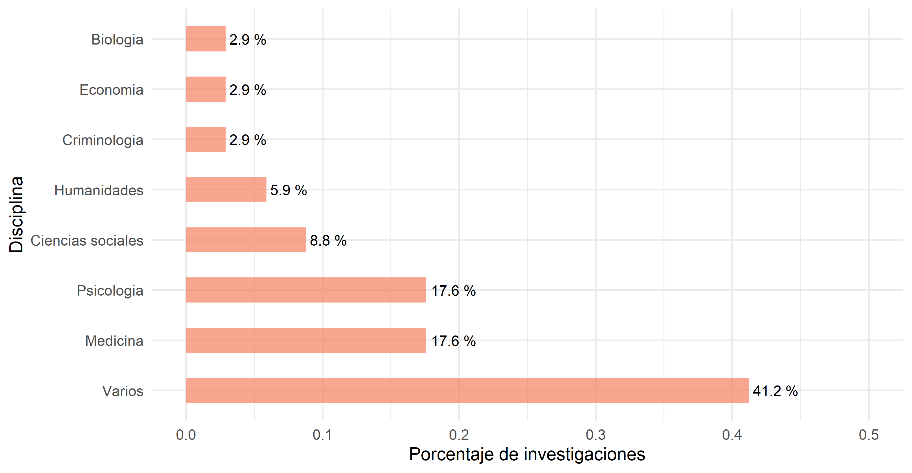
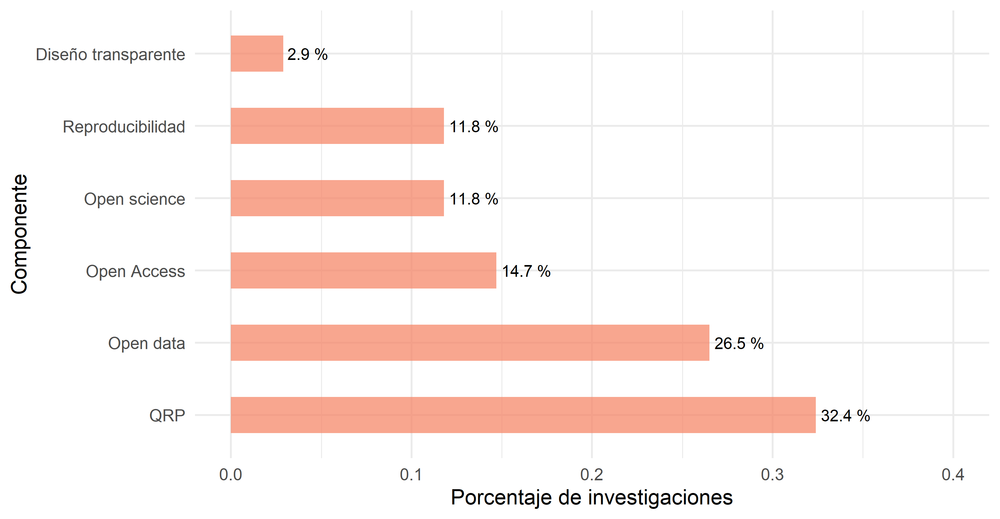

Capítulo 2 Antecedentes
Este proceso de investigación ha sido realizado con el propósito de generar un diseño de investigación que permita dar cuenta del estado de la Ciencia Abierta en Chile, enmarcándose disciplinarmente dentro de la investigación científica de las Ciencias Sociales. Sin embargo, debido a las escasas investigaciones sobre Ciencia Abierta en las Ciencias Sociales, se toman como referencia las investigaciones que abordan temáticas relacionadas con la Ciencia Abierta de manera general, es decir, sin discriminar según campo disciplinar. Esto permite adquirir un panorama general del modo en que han sido realizadas las investigaciones empíricas sobre Ciencia Abierta, sentando las bases metodológicas que fundamenten esta investigación.
La recopilación de literatura científica fue llevada a cabo a través de portales científicos de indexación de revistas académicas, como Web of Sciencie, Scopus, Science Direct y Springer, entre otros. Se realizaron búsquedas a partir de palabras y conectores clave como “Social open science”, “Questionable research practices”, “practices of open science”, “perceptions about reproducibility” y otras combinaciones similares. Para abarcar la totalidad del concepto de la Ciencia Abierta se dividió la búsqueda según los distintos componentes de la Ciencia Abierta, tales como la apertura del diseño de investigación, el Acceso abierto, Data sharing y reproducibilidad.
En términos concretos, se revisaron 34 investigaciones empíricas que buscan establecer un panorama general de la Ciencia Abierta en distintos contextos disciplinares mediante encuestas. En el Gráfico N° 2.1 se muestra la disponibilidad de investigaciones según su año de publicación. Así, es posible dar cuenta un aumento considerable en este tipo de investigaciones desde el año 2015.
Figura 2.1: Cantidad de investigaciones segun año de publicacion.
Dentro de esta revisión de investigaciones empíricas, como se puede observar en el Gráfico N° 2.2, seis son específicas del campo de la psicología, mientras que solo tres de ellas se enmarcan en las Ciencias Sociales en general. Asimismo, 14 investigaciones se enfocan en científicos, académicos e investigadores de varias disciplinas al mismo tiempo, mientras que otras 11 abordan disciplinas específicas como la medicina, humanidades o economía.
Figura 2.2: Cantidad de investigaciones segun disciplina.
En cuanto a los temas o componentes que se abordan sobre la Ciencia Abierta, en el Gráfico N° 2.3 se muestra que cuatro investigaciones abordan este tema como un concepto en general. El resto de investigaciones se centran específicamente en alguno de los subtemas que comúnmente componen la Ciencia Abierta como las prácticas cuestionables de investigación (QRP), la apertura de datos, el acceso abierto o la reproducibilidad.
Figura 2.3: Cantidad de investigaciones segun componente de ciencia abierta.
Finalmente, en el Gráfico N° 2.4 se muestra que la mayoría de las investigaciones revisadas intenta adquirir una perspectiva internacional del estado de la Ciencia Abierta (10 investigaciones). En segundo lugar se ubica Estados Unidos (8 investigaciones), seguido de Alemania (5 investigaciones). En América Latina solo se revisaron dos investigaciones, realizadas en Colombia y Venezuela.
Figura 2.4: Cantidad de investigaciones segun pais.
Además, es relevante destacar que debido a que el objetivo de este diseño de investigación es abordar el estado de la Ciencia Abierta en académicos/as de las Ciencias Sociales, según sus percepciones, creencias y prácticas, las investigaciones que siguen la línea de un meta-análisis de la producción científica solo son enunciadas como ejemplo. En este sentido, también resulta relevante mencionar que no son consideradas las investigaciones sobre las perspectivas de editores de revistas (Maggin, 2021) y estudios cualitativos mediante entrevistas (Scheliga & Friesike, 2014).
Referencias
Maggin, D. M. (2021). Journal Editor and Associate Editor Perspectives on Research Reproducibility and Open Science. Remedial and Special Education, 074193252110172. https://doi.org/10.1177/07419325211017294
Scheliga, K., & Friesike, S. (2014). Putting Open Science into Practice: A Social Dilemma? First Monday. https://doi.org/10.5210/fm.v19i9.5381